Navigate to VPC dashboard at this link: VPC Dashboard. Then click to Create VPC.
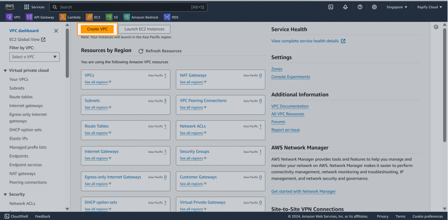
To make the VPC setup process simpler, I recommend choosing VPC and more as the Resource to create. It includes the necessary templates for a complete VPC, such as subnets, route tables, internet gateways, and endpoints, which will make creating a VPC much easier.
Change the default name of the VPC.
Then choosing the CICD block.
Since IPv6 is not necessary here, so I choose No IPv6 CIDR block.
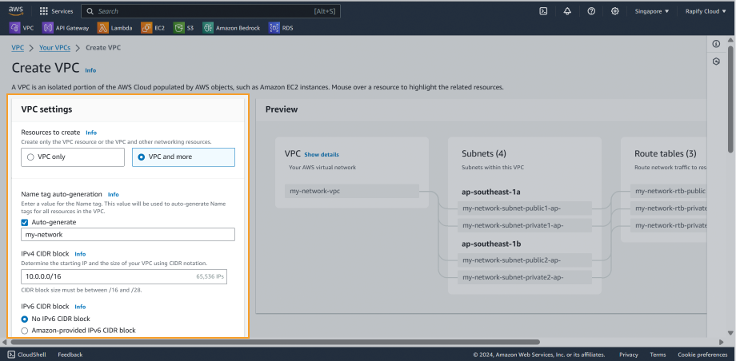
Note: An AWS VPC CIDR (Classless Inter-Domain Routing) block defines the private IP address range for your Virtual Private Cloud. It’s essentially a pool of IP addresses that only resources within your VPC can use.
Starter templates allow you to choose the number of Availability Zones (AZs) for your VPC. While two AZs are the minimum required for high availability, you can choose one or three depending on your specific needs.
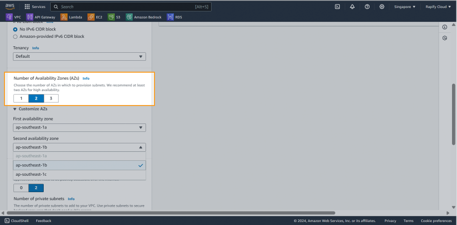
And you can custom your subnet, choose which AZ you want to use for your AZ.
Ex: ap-southeast-1a, ap-southeast-1b, ap-southeast-1c
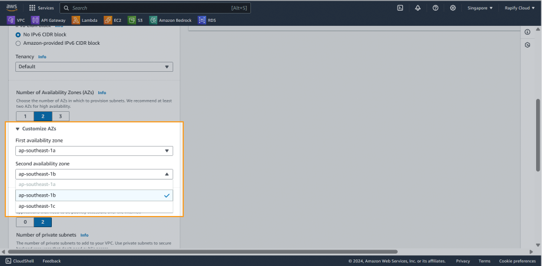
Then you custom CIDR block for each ssubnet in your VPC. CIDR block must in CIDR block of your VPC.
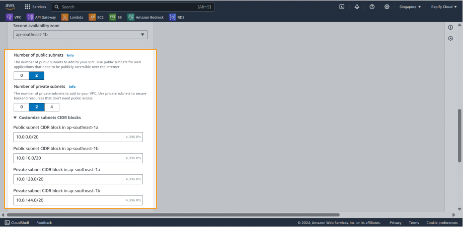
If your want applications run Private Subnet can go to internet to get necessary packages, you can think about using NAT Gateway.
If you don’t want to using resource on Internet, but put packages on S3 and securely access S3 buckets, you can setup a S3 endpoint.
Depend on your use cases, choose the best option for you.
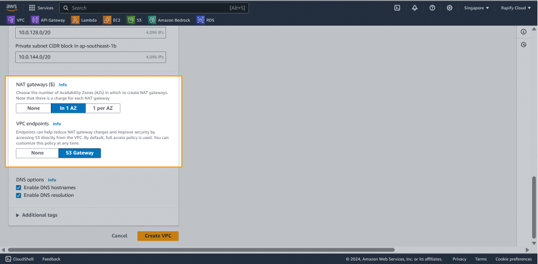
When you launch an instance, it always receives a private IPv4 address and a private DNS hostname that corresponds to its private IPv4 address. If your instance has a public IPv4 address, the DNS attributes for its VPC determines whether it receives a public DNS hostname that corresponds to the public IPv4 address.
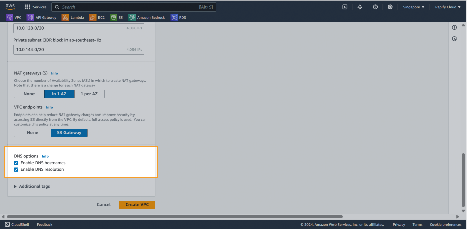
Click the Create VPC button and wait until resource creation is complete.
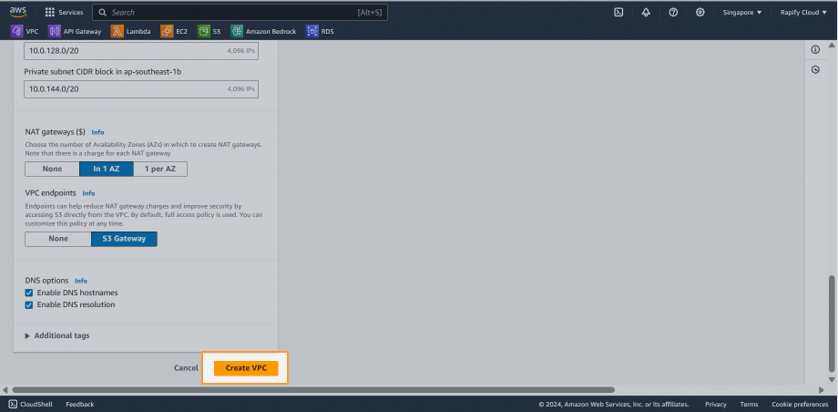
You can see which public subnets is going to internet through internet gateway.
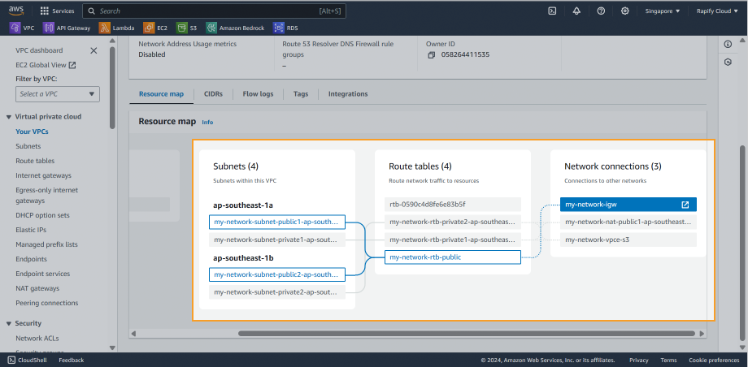
You can see which private subnets is can access internet by nat gateway.
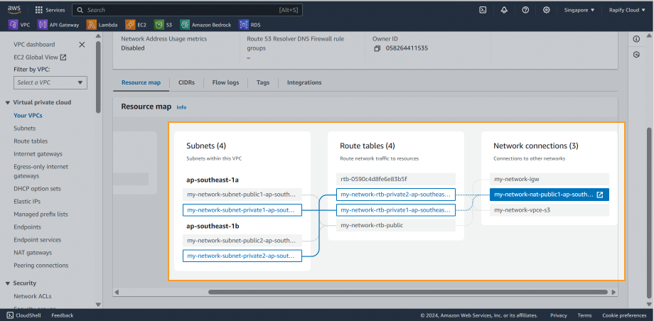
And see if your private subnets is using S3 endpoint to connect to S3 buckets.
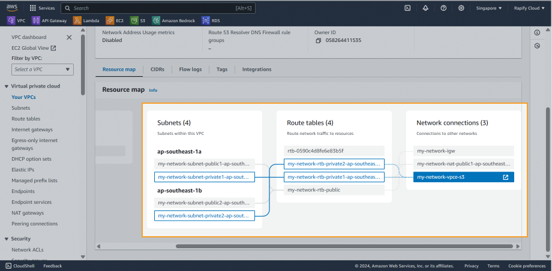
🚀 Okay, that’s done. Now let go to our main sections!